Week 5:
Global Navigation Satellite Systems and Coordinate Surveying
Intro to GISEvan Lue, PhD
GNSS
Global Navigation Satellite Systems

Bolstad 2012, Fig 5-1
GNSS Systems*
- GPS - USA - NAVSTAR Global Positioning System
- GLONASS - Russian Federation - Global Navigation Satellite System
- BeiDou - China - regional, global in development
- Galileo - EU - in development
*Yes, the last "S" in "GNSS" also stands for "Systems"
Segments

Bolstad 2012, Fig 5-2
GPS Constellation
- Constellation - a collection of satellites working together
- 20,000 km above earth
- 2x daily, above horizon 8+ hrs per day
- The book suggests 4-8 satellites visible at any time
- 21 active + 3 spare, and some more


Bolstad 2012, Fig 5-3 and Wikimedia Commons
GNSS User
 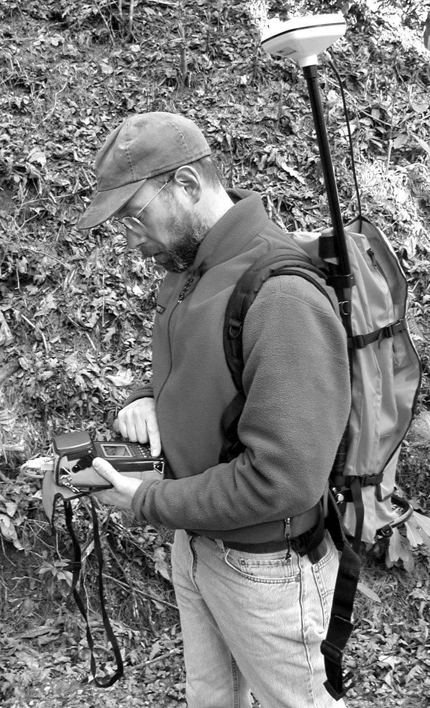
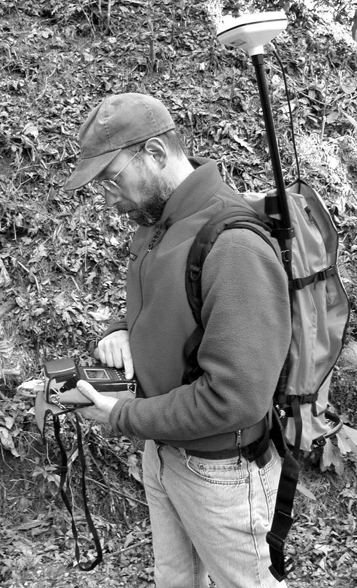Bolstad 2012, Fig 5-4
GPS Signals
- Pseudorandom noise (PRN) - signals similar to noise, but consisting short segments of code.
- C/A code - Coded signal; coarse acquisition, PRN.
- P-code - Coded signal; Precision code, PRN.
- L1 - Carrier signal; C/A and P code.
- L2 - Carrier signal; P code.

Bolstad 2012, Table 5-1
GNSS Terms
- Almanac - system info on time and status of a constellation.
- Ephemeris data - information on the position of satellites and their expectes positions.
Broadcast Signals
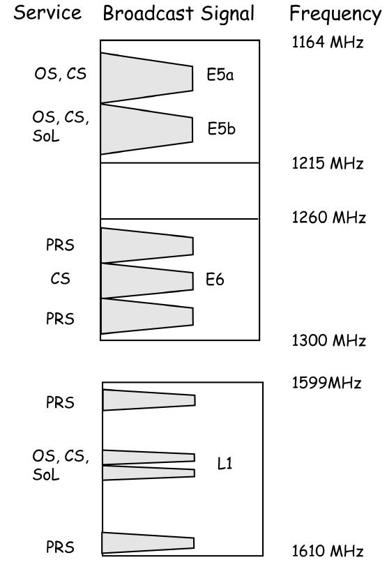Bolstad 2012, Fig 5-5
Range
The distance between two objects.
Range = (speed of light) * (travel time)

Bolstad 2012, Fig 5-6
Decoded C/A Signal

Bolstad 2012, Fig 5-7
Range Measurements cont.
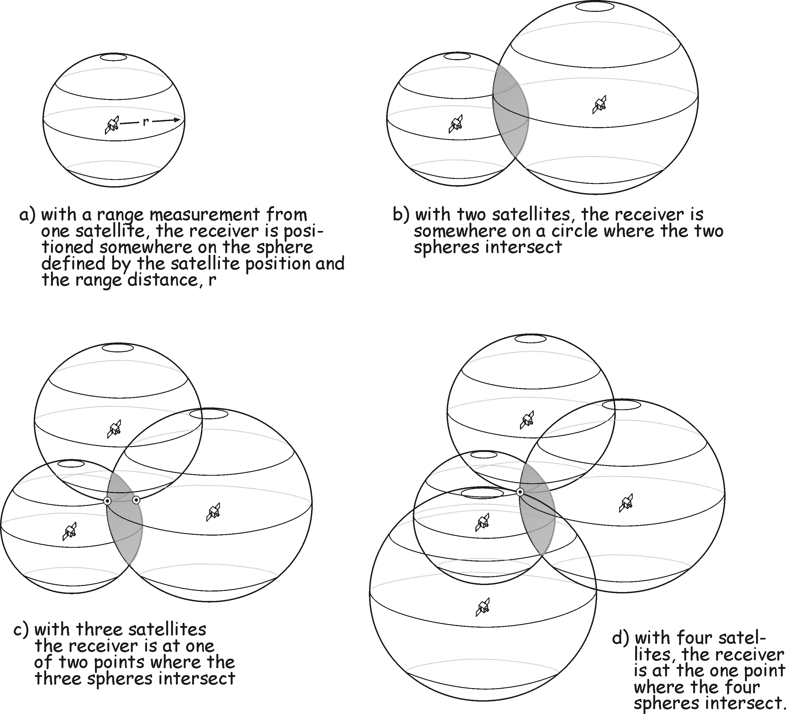Bolstad 2012, Fig 5-8
Range Uncertainty
Ionospheric/Atmospheric Delays - varied speed traveling through the ionsphere/atmosphere
Dual Frequency - Some receivers collect from multiple GNSS signals and remove ionospheric errors.
Multipath - Signals reflected off of objects; take longer to reach the object and are weaker.
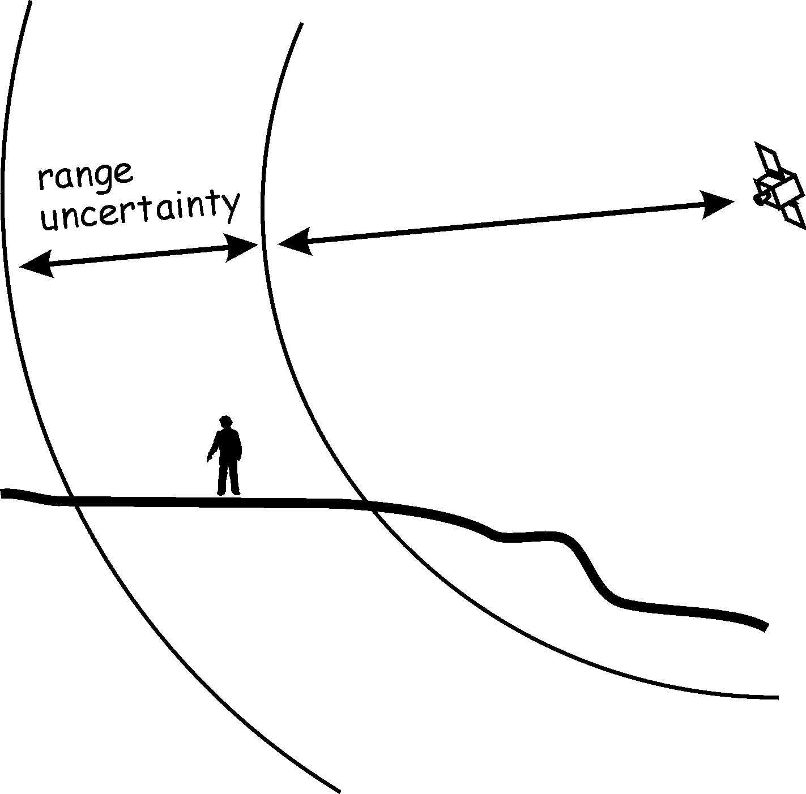Bolstad 2012, Fig 5-9
The Horizon
More atmosphere to pass through.

Bolstad 2012, Fig 5-10
Positional Accuracy
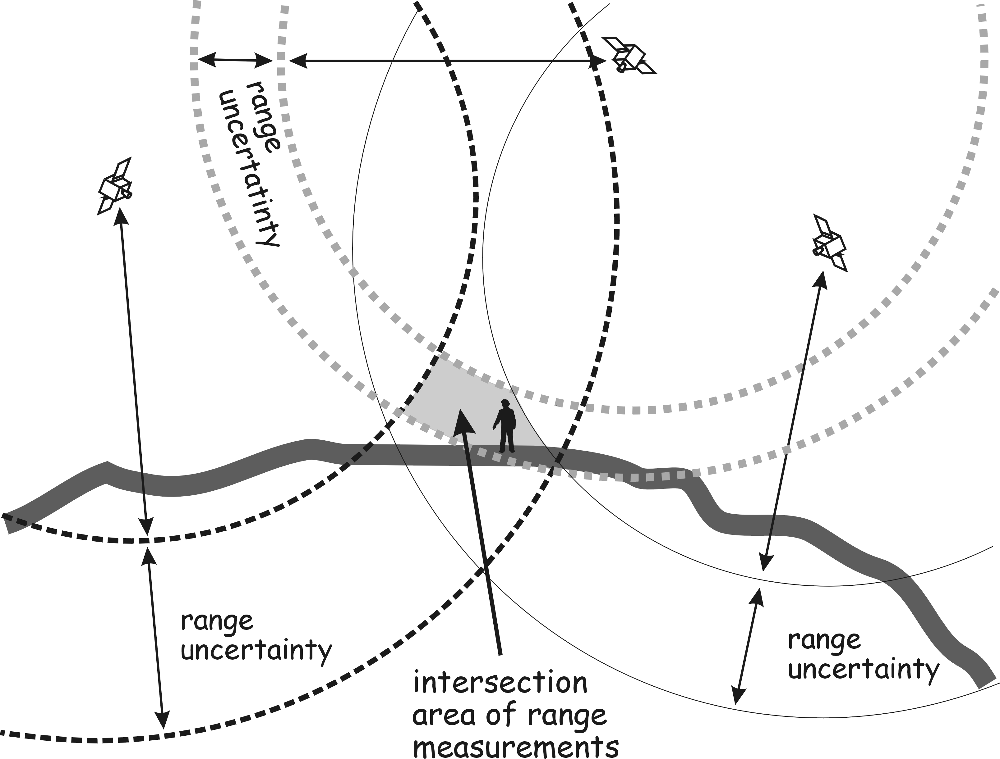Bolstad 2012, Fig 5-11
Dilution of Precison (DOP)
Describes effects of satellite location on precision.
- PDOP - Position (3D). Lower is better, 1-5 is good.
- Also: HDOP (Horizontal), VDOP (Vertical), TDOP (Time), GDOP (Geometric)

Bolstad 2012, Fig 5-12
GPS Error


Bolstad 2012, Fig 5-13
Differential GNSS Positioning
- Differential Positioning - Using one or more receivers.
- Base Station - A receiver at a known location.

Bolstad 2012, Fig 5-14
Differential Correction

Bolstad 2012, Fig 5-15
Real-Time vs. Post-Processing

Bolstad 2012, Fig 5-16
GPS Radio Beacons
- Radio beacons - broadcasted signal correction. Beacon receivers - a GPS must have a beach receiver to use the radio beacons
Bolstad 2012, Fig 5-17
Satellite-Based Augmentation Systems (SBAS)
The Widea Area Augmentation System (WAAS) administered by the FAA is the most common example.
"SBAS Service Areas" by Persimplex
Real-Time Kinematic (RTK)
Dual-frequency solution reducing ionospheric delays.
Virtual Reference Station (VRS) - A roving receiver is never too far from a base station.

Bolstad 2012, Fig 5-18
Datum Warning
Remember that a transformation is needed when using different datums. GPS is based on WGS84. Many GPS devices can account for geographic coordinate systems.
Optical/Laser Surveying
Plane surveying - horizontal surveying on a planar (flat) surface.

Bolstad 2012, Fig 5-19
Surveying Instruments
Assuming a flat surface; plumb lines are perpendicular to the surface.
Surveys are under a few tens of kilometers. The distance error over 10 km is 0.72 cm.
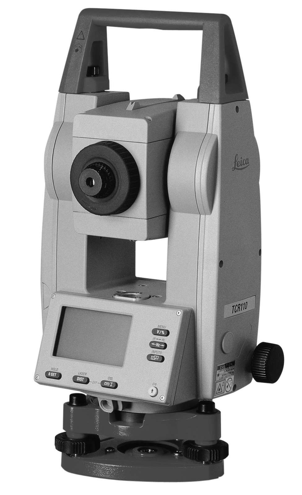Bolstad 2012, Fig 5-20
How It's Done
Distances and directions are measured from survey stations. Traverses are series of connected lines that mark the beginning and end of a point. Coordinate geometry (COGO) is used to calculate coordinate locations. Traverses may be open (start and end are different) or closed (end at start).
Example COGO Description
"The starting point is a 1-inch rod that is approximately 102.4 feet north and 43.1 feet west of the northeast quarter of the southeast quarter section of section 16 of Township 24 North, Range 16 East, of the 2nd Principal Meridian. Starting from the said poiint, thence 102.7 feet on a bearing north 72.3 degrees east, to a 1-inch iron pipe; thence 429.6 feet on a bearing south, 64.3 degrees east to a 2-inch iron pipe..."
Azimuth and Bearing
Azimuth - Measured clockwise from North.
Bearing - Measured relative to North or South with the turning direction specified.
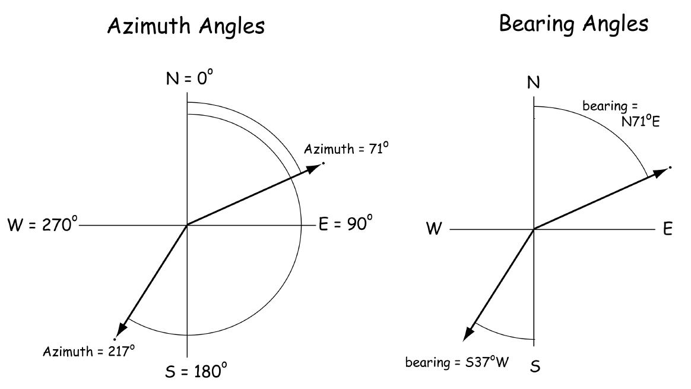Bolstad 2012, Fig 5-21
Coordinate Geometry (COGO)
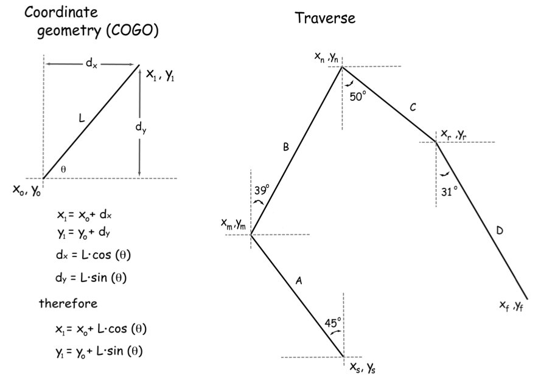Bolstad 2012, Fig 5-22
3D Laser Scanners

Bolstad 2012, Fig 5-23
Types of Receivers

Bolstad 2012, Fig 5-24
Field Collection
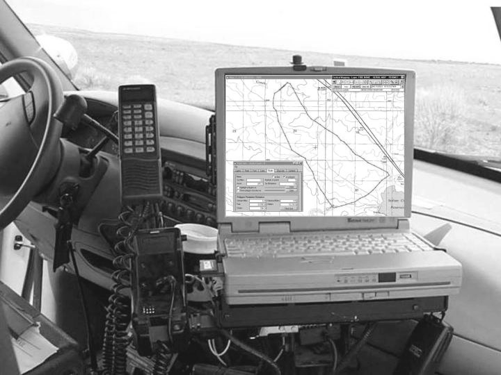 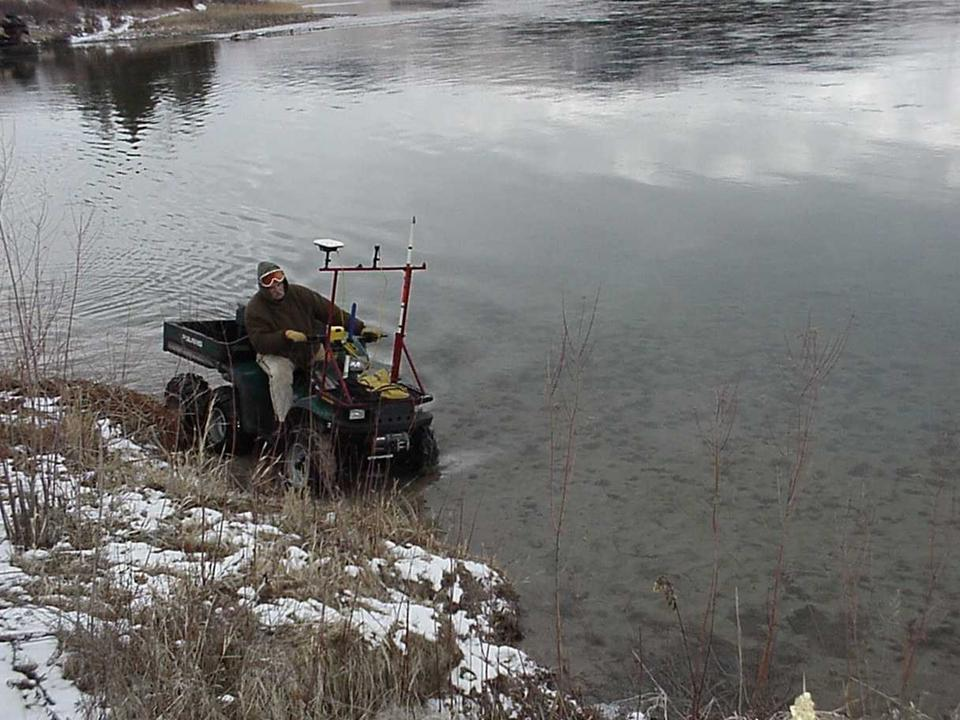Bolstad 2012, Fig 5-25
Feature Editing


Bolstad 2012, Figs 5-26 and 5-27
Visibility in the Field
Uneven terrain obstructs sky views.

Bolstad 2012, Fig 5-28
PDOP vs. Horizon Angle
The more sky you see, the better your precision.
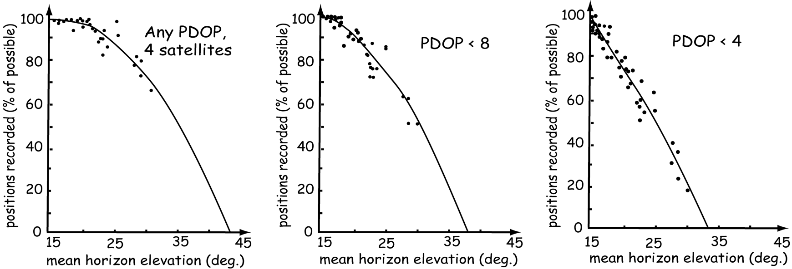Bolstad 2012, Fig 5-29
Additional Tools
Rangefinder - Remotely calculates position and distance.
Range pole - A pole to mount an antenna on.
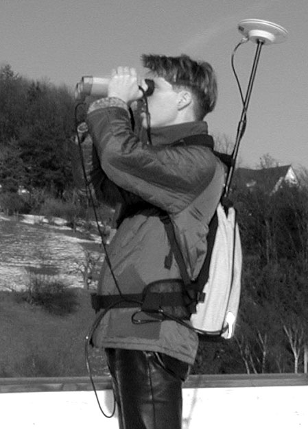Bolstad 2012, Fig 5-30
Real-Time Tracking

Bolstad 2012, Fig 5-31
Wildlife Tracking
Radio telemetry - Transmitting and receiving radio units.
More and more, GNSS can be used for this.
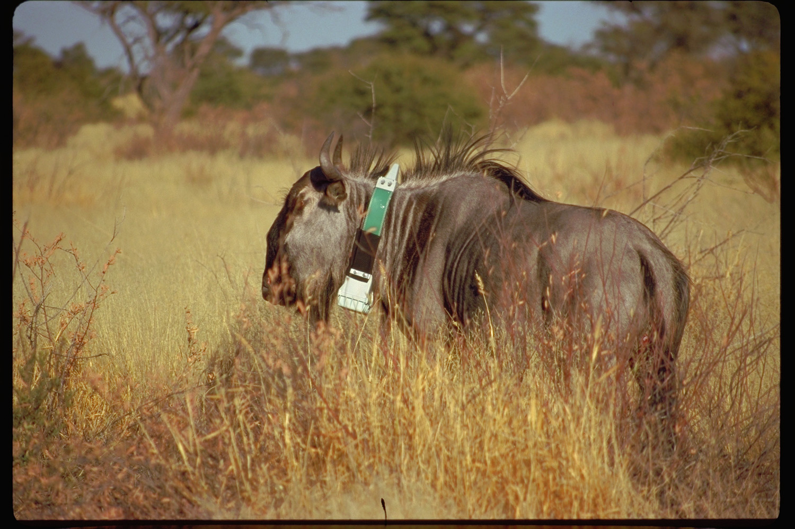 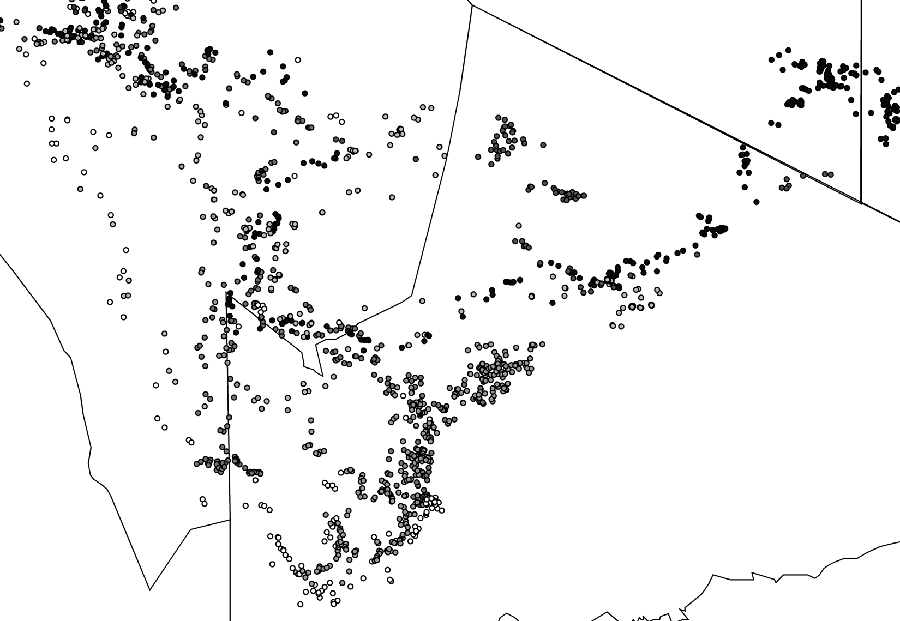
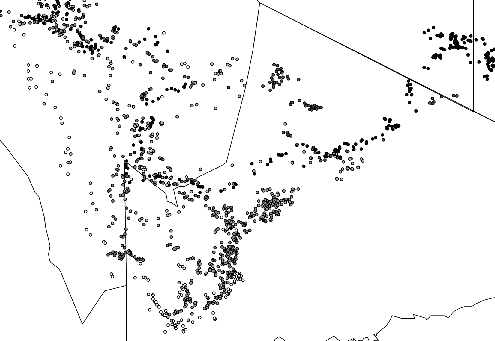Bolstad 2012, Figs 5-32, 5-33, and 5-34